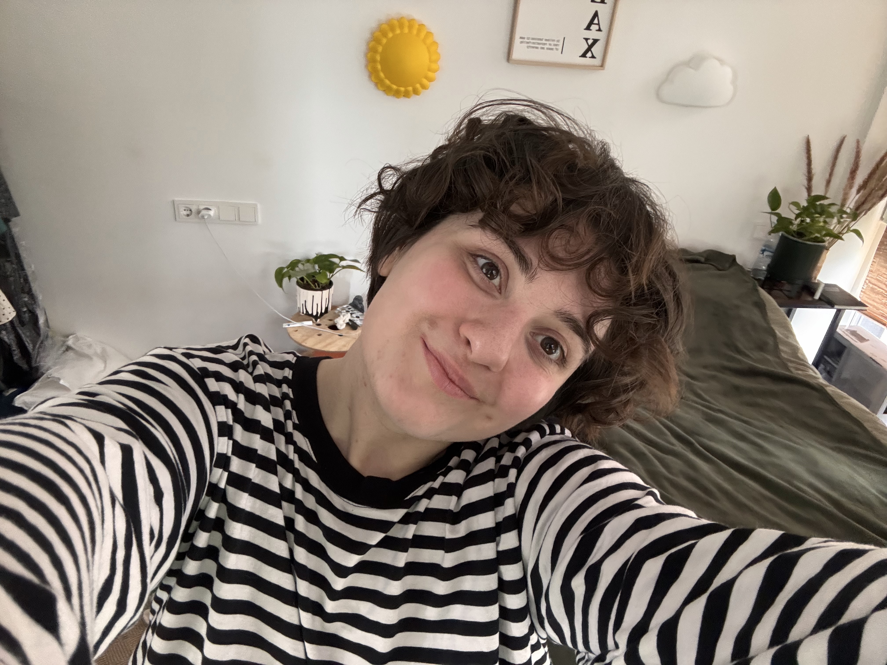

Nicole Shakarishvili
Pesidze
Batumi
Georgia
Barcelona
since 2023
Prague
BA · UK Diploma
UX · SaaS
New York
EN · KA
RU · ES (b.)
Path
1996
Born in Batumi
Georgia
2014
School finished
Batumi
2017
BA in Visual Communication
Prague, Czech Republic — British diploma
2019
Independent practice begins
Freelance · remote
2022
UX Designer
SaaS · New York (remote)
2023
Moved to Barcelona
Home, finally
2026
Packages launched
For Barcelona small businesses & NGOs
FOUR COUNTRIES · ONE HOME
TBILISI → PRAGUE → NY → BCN
FOUR COUNTRIES · ONE HOME
Now let's
make something.
Say hi →